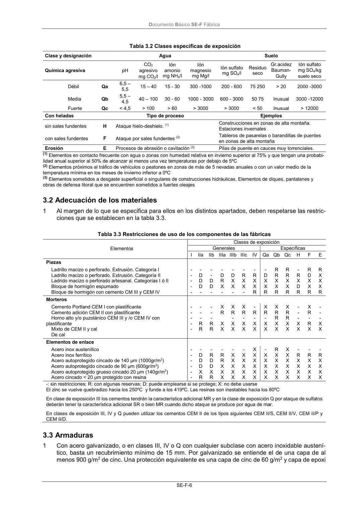

DB-SE-F · 3.2 Adecuación de los materiales · 3.3 Armaduras · versión 2019-12-20
SHA256: e3e0805c3b4c307519c26dc34c3fdbf143d842edd013c91b0f52d2c73403d91c · página física 10 de 70 · métodos de encabezado
solo si están cotejados.
Formatos: Markdown · JSON de bloques · PDF p. 10 · imagen PNG
Documento Básico SE-F Fábrica SE-F-6 Tabla 3.2 Clases específicas de exposición Clase y designación Agua Suelo Química agresiva pH CO2 agresivo mg CO2/l Ión amonio mg NH4/l Ión magnesio mg Mg/l Ión sulfato mg SO4/l Residuo seco Gr.acidez Bauman- Gully Ión sulfato mg SO4/kg suelo seco Débil Qa 6,5 – 5,5 15 – 40 15 - 30 300 -1000 200 - 600 75 250 > 20 2000 -3000 Media Qb 5,5 – 4,5 40 – 100 30 - 60 1000 - 3000 600 - 3000 50 75 Inusual 3000 -12000 Fuerte Qc < 4,5 > 100 > 60 > 3000 > 3000 < 50 Inusual > 12000 Con heladas Tipo de proceso Ejemplos sin sales fundentes H Ataque hielo-deshielo. (1) Construcciones en zonas de alta montaña. Estaciones invernales con sales fundentes F Ataque por sales fundentes (2) Tableros de pasarelas o barandillas de puentes en zonas de alta montaña Erosión E Procesos de abrasión o cavitación (3) Pilas de puente en cauces muy torrenciales. (1) Elementos en contacto frecuente con agua o zonas con humedad relativa en invierno superior al 75% y que tengan una probabi- lidad anual superior al 50% de alcanzar al menos una vez temperaturas por debajo de 5ºC (2) Elementos próximos al tráfico de vehículos o peatones en zonas de más de 5 nevadas anuales o con un valor medio de la temperatura mínima en los meses de invierno inferior a 0ºC (3) Elementos sometidos a desgaste superficial o singulares de construcciones hidráulicas. Elementos de diques, pantalanes y obras de defensa litoral que se encuentren sometidos a fuertes oleajes 3.2 Adecuación de los materiales 1 Al margen de lo que se especifica para ellos en los distintos apartados, deben respetarse las restric- ciones que se establecen en la tabla 3.3. Tabla 3.3 Restricciones de uso de los componentes de las fábricas Elementos Clases de exposición Generales Específicas I IIa IIb IIIa IIIb IIIc IV Qa Qb Qc H F E Piezas Ladrillo macizo o perforado. Extrusión. Categoría I Ladrillo macizo o perforado. Extrusión. Categoría II Ladrido macizo o perforado artesanal. Categorías I ó II Bloque de hormigón espumado Bloque de hormigón con cemento CM III y CEM IV - - - - - - D D D - - - D D - - D R X - - D X X - - R X X - - R X X R - D X X R R R X X R R R X X R - R X D R R D X X R R X X X R Morteros Cemento Portland CEM I con plastificante Cemento adición CEM II con plastificante Horno alto y/o puzolánico CEM III y /o CEM IV con plastificante Mixto de CEM II y cal De cal - - - - - - - - R R - - - R R X R X X X R - X X X R - X X - R - X X X R - X X X R R X X X R R X X - - - X X X R - R X - - - X X Elementos de enlace Acero inox austenítico Acero inox ferrítico Acero autoprotegido cincado de 140 µm (1000gr/m2) Acero autoprotegido cincado de 90 µm (600gr/m2) Acero autoprotegido grueso cincado 20 µm (140gr/m2) Acero cincado < 20 µm protegido con resina - - - - - - - D D D X R - R D D X R - R R X X X - X X X X X - X X X X X X X X X X X - X X X X X R X X X X X X X X X X X - R X X X X - R X X X X - R X X X X -: sin restricciones; R: con algunas reservas; D: puede emplearse si se protege; X: no debe usarse El zinc se vuelve quebradizo hacia los 250ºC y funde a los 419ºC. Las resinas son inestables hacia los 80ºC En clase de exposición III los cementos tendrán la característica adicional MR y en la clase de exposición Q por ataque de sulfatos deberán tener la característica adicional SR o bien MR cuando dicho ataque se produce por agua de mar. En clases de exposición III, IV y Q pueden utilizar los cementos CEM II de los tipos siguientes CEM II/S, CEM II/V, CEM II/P y CEM II/D. 3.3 Armaduras 1 Con acero galvanizado, o en clases III, IV o Q con cualquier subclase con acero inoxidable austení- tico, basta un recubrimiento mínimo de 15 mm. Por galvanizado se entiende el de una capa de al menos 900 g/m2 de cinc. Una protección equivalente es una capa de cinc de 60 g/m2 y capa de epoxi
